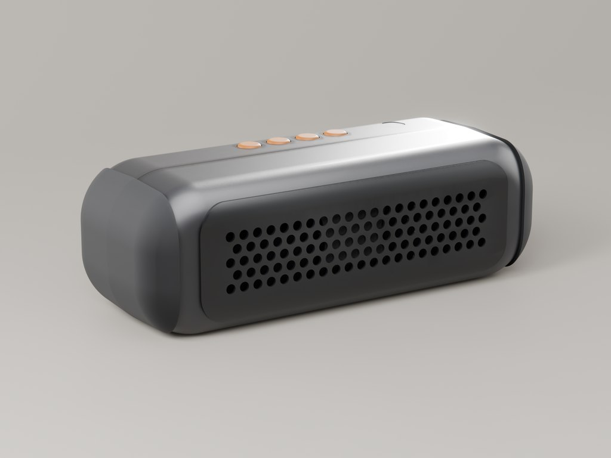
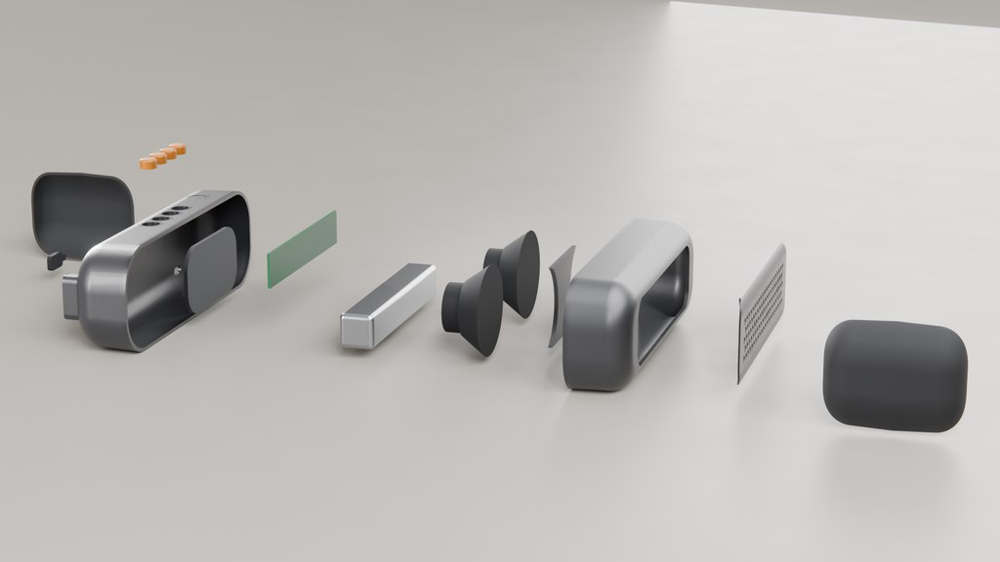
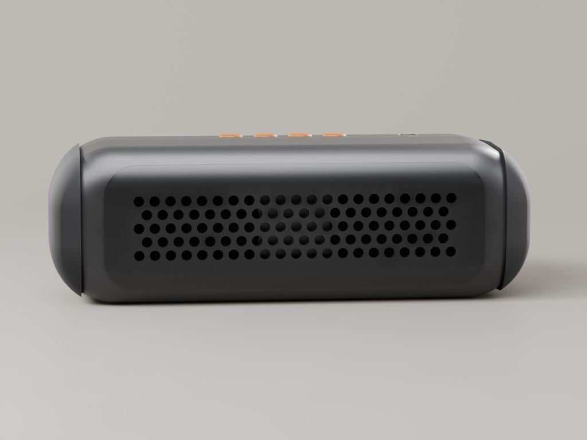
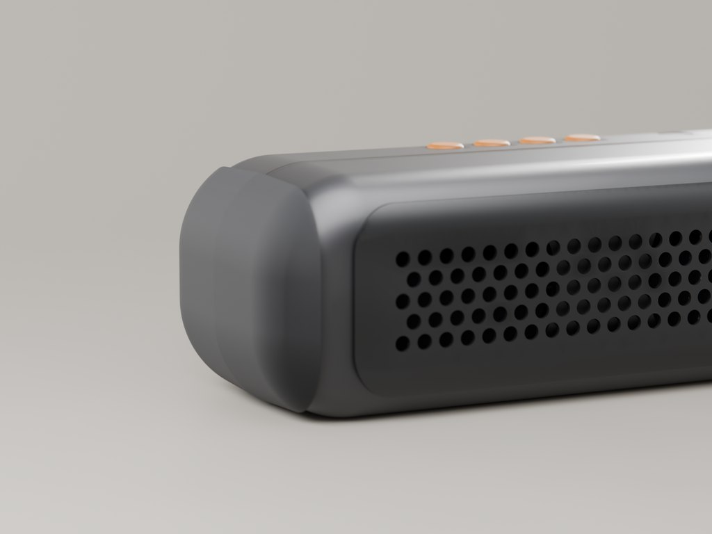

Drift taşınabilir hoparlör
Kalıp ayrım çizgisi etrafında kurgulanmış bir gövde
- 2026
- Ürün tasarımı ve üretilebilirlik
- Konsept proje

Enjeksiyon kalıp için detaylandırılmış 186 mm'lik taşınabilir hoparlör: 0,2 mm'lik ayrım boşluğunda buluşan iki gövde, 2,2 mm et kalınlığı, ayrım düzleminden 1,5° çıkış açısı ve ön yüze işlenmiş delikli ızgara.
| Ölçüler | 186 × 70 × 62 mm |
|---|---|
| Et kalınlığı | 2.2 mm |
| Çıkış açısı | ayrım düzleminden 1 |
| Ayrım boşluğu | 0.2 mm |
| Parça sayısı | 16 |
| Gövdeler | ABS, yaklaşık 91 g |
| Sürücüler | 2 × 52 mm |
| Izgara | 103 delik, Ø3,6 mm, 6 mm adım |
| Dosyalar | STEP · 3DM · OBJ · PDF |
Brief
Kendi belirlediğim bir brief: küçük bir markanın gerçekten kalıp yaptırabileceği, sağlam bir taşınabilir hoparlör. Yani iki kalıp parçası, hiçbir yerde ters açı olmaması, düşmelere dayanacak yumuşak kaplama uçlar ve yine de tasarlanmış görünen bir form.
Kalıbı sonradan değil, baştan düşünmek
Gövdenin en geniş kesiti tam olarak ayrım düzleminde duruyor; böylece kalıp iki yöne temiz açılıyor ve ayrım çizgisi gözün zaten beklediği yere denk geliyor. Tüm duvarlar bu düzlemden 1,5° uzaklaşıyor, iki gövde bilinçli bırakılmış 0,2 mm'lik boşlukta buluşuyor ve yumuşak uç kaplamalar bu birleşimi elin ve darbenin geldiği yerde sarıyor.

Akustik ve ön yüz
İki adet 52 mm sürücü iç baffle üzerinde; arkada pasif radyatör, arka gövdede bas kanalı var. Ön yüzde 6 mm şaşırtmalı adımla 3,6 mm'lik 103 delik: sürücüler için yeterince açık, bir metre uzaktan tek bir yüzey gibi okunacak kadar sık.


Üreticiye teslim edilenler
STEP ve 3DM olarak üretim CAD'i, ölçülendirilmiş teknik resimler, patlatılmış görünüm ve 16 parçalık malzeme listesi; ayrıca et kalınlığı, çıkış açısı, ayrım çizgisi ve yolluk konumlarına dair notlar. Buradaki tüm görseller aynı modelden alındı.
Teslim edilenler
- Üretim CAD'i (STEP, 3DM)
- Ölçülendirilmiş PDF teknik resimler
- Patlatılmış görünüm ve 16 parçalık malzeme listesi
- Fotogerçekçi render'lar, 4K